Почему мы ищем адреналин?
*
Кажется странным, что человек добровольно выбирает ситуации, в которых ему страшно. Мы садимся на
американские горки, прыгаем с высоты, выходим на сложные маршруты и постоянно ищем новые впечатления. Но
за этим стоит не любовь к опасности, а желание почувствовать себя живым.
В повседневной жизни эмоции часто становятся приглушёнными. Работа, учёба, одинаковые маршруты и
постоянный поток информации превращают дни в повторяющийся цикл. Адреналин нарушает эту привычную
систему. Он заставляет концентрироваться на настоящем моменте и возвращает внимание к собственным
ощущениям.
Во время восхождения человек проходит целый спектр эмоций. Сначала появляется тревога перед стартом.
Затем концентрация, когда всё внимание направлено на следующий шаг. После этого приходит напряжение, а
вместе с ним азарт и желание двигаться дальше. На вершине маршрут заканчивается, но эмоциональный пик
только достигается.
Скалолазание интересно тем, что позволяет безопасно прожить эти ощущения. Здесь страх становится частью
опыта, а не препятствием. Каждое восхождение превращается в небольшой эмоциональный эксперимент, который
помогает лучше понять себя.
Опоры в нашей жизни
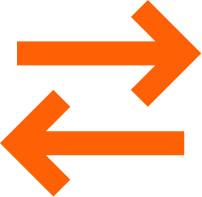
*
В скалолазании движение невозможно без опор. Каждая зацепка становится точкой контакта, которая позволяет
удержаться на стене и продолжить путь. Если убрать опоры, маршрут перестаёт существовать.
Похожий принцип работает и в жизни. У каждого человека есть собственные точки опоры. Это могут быть
близкие люди, любимые занятия, воспоминания, привычки или места, в которых мы чувствуем себя спокойно.
Иногда кажется, что движение вперёд зависит исключительно от силы характера. Однако чаще всего нас
поддерживают небольшие вещи, которые остаются незаметными.
Каждое восхождение напоминает о том, что путь состоит не только из препятствий. Он состоит из множества
опор, благодаря которым движение вообще становится возможным.
Зачем иногда нужно сорваться
*
В обычной жизни падение воспринимается как неудача. Нас учат избегать ошибок, постоянно двигаться вперёд
и никогда не останавливаться. Но в скалолазании падение считается естественной частью процесса.
Практически невозможно пройти сложный маршрут с первой попытки. Срывы происходят постоянно. Они позволяют
понять собственные ошибки, увидеть маршрут иначе и попробовать снова.
То же самое происходит и с эмоциями. Иногда человеку необходимо остановиться, признать усталость,
потерять контроль над ситуацией или столкнуться с разочарованием.
Падение не завершает маршрут. Оно становится частью движения. Возможность начать заново уже обладает
новым опытом и пониманием.
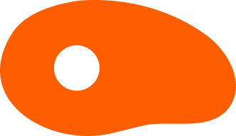
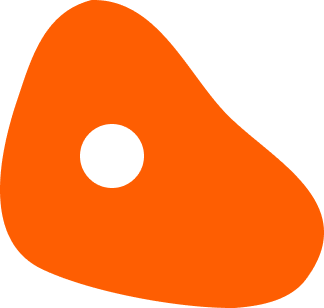
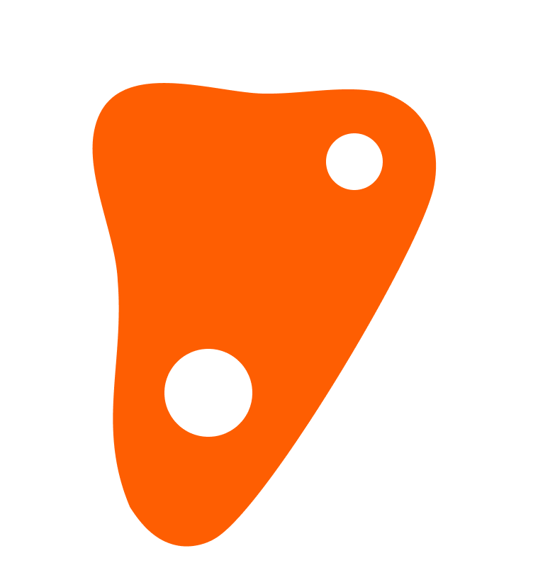
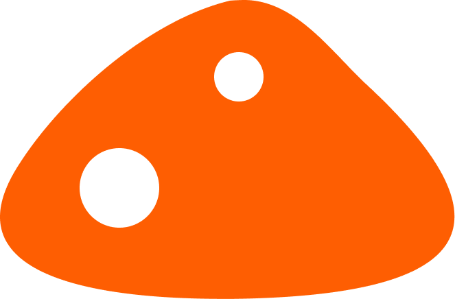
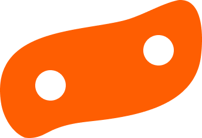
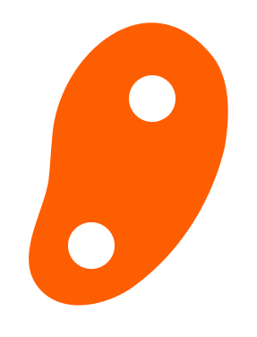
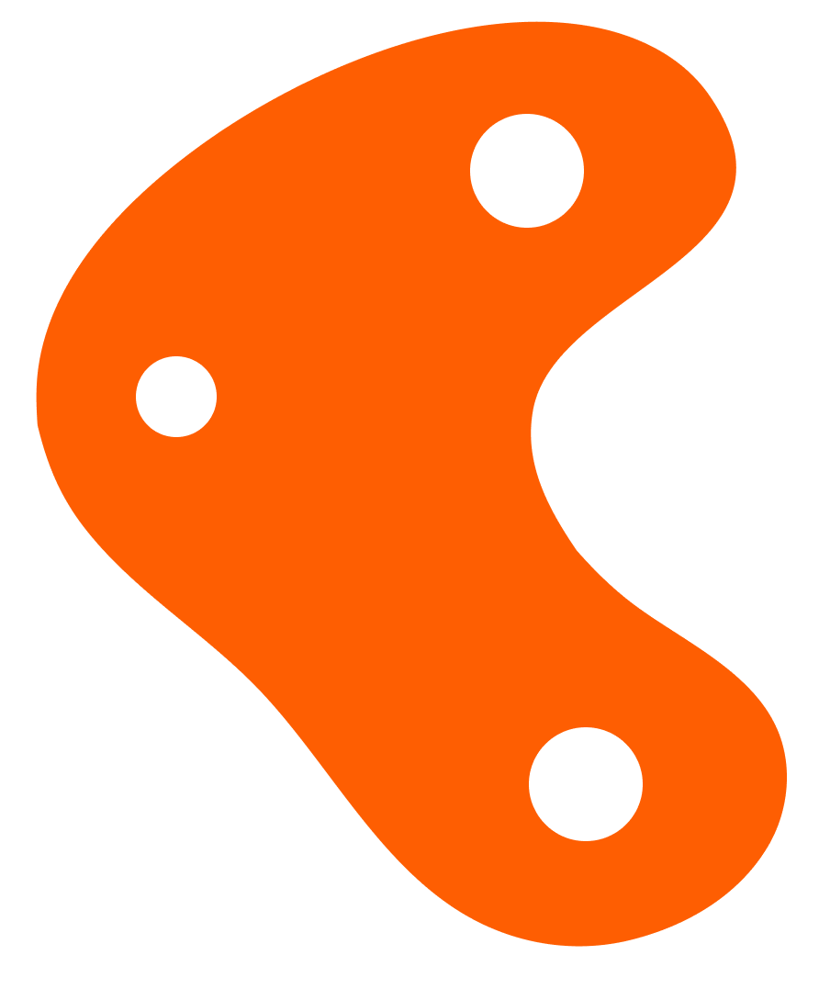
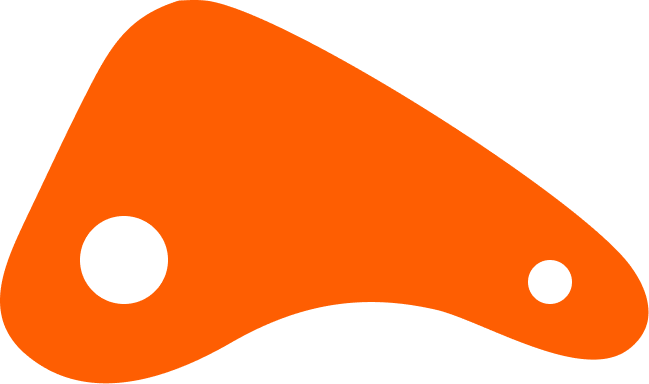
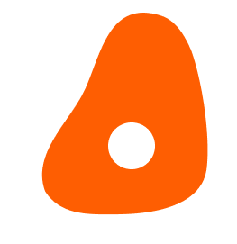
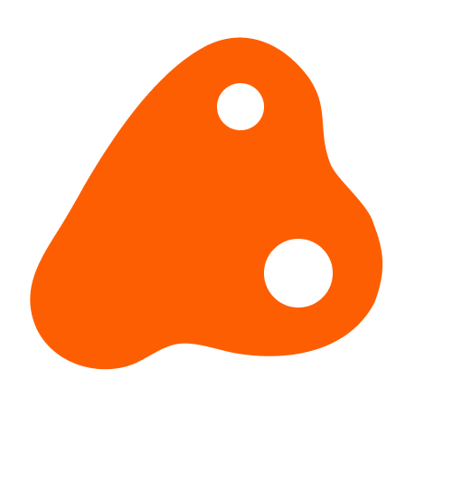
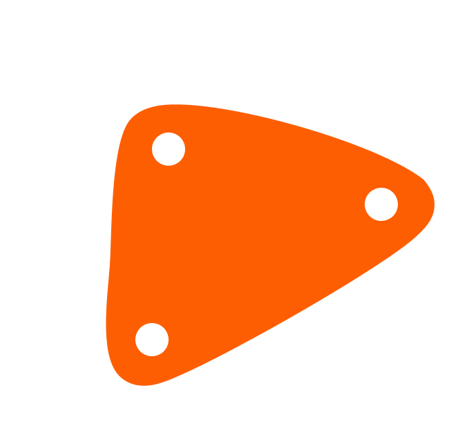
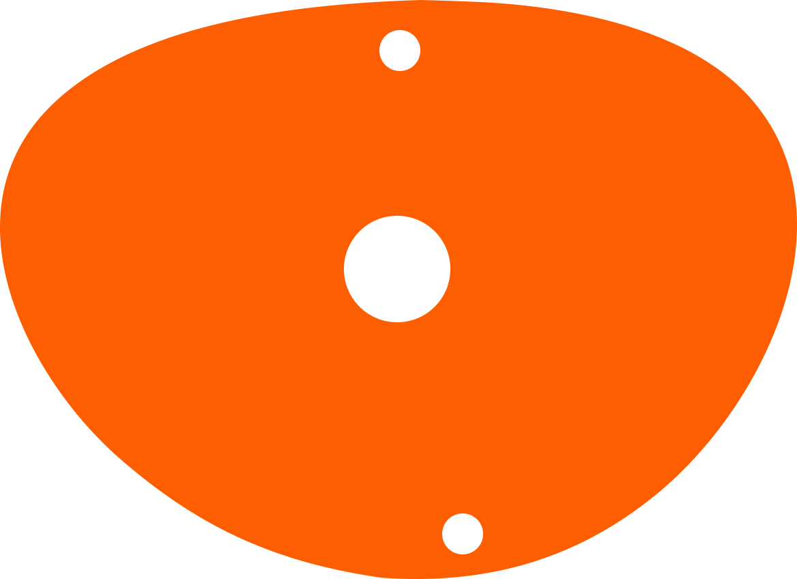
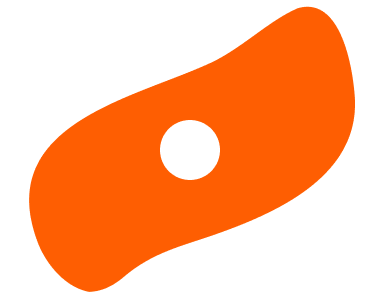
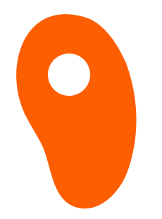
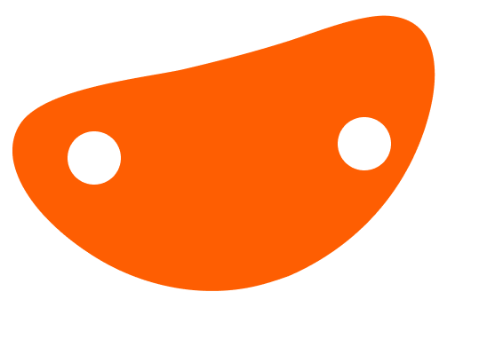
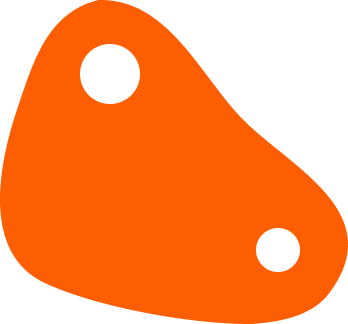
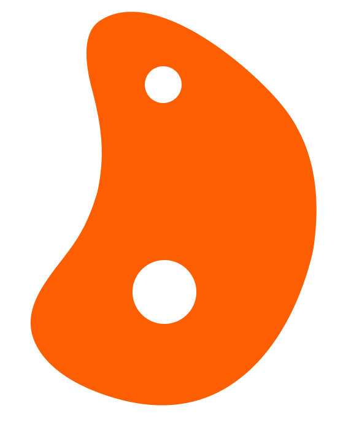
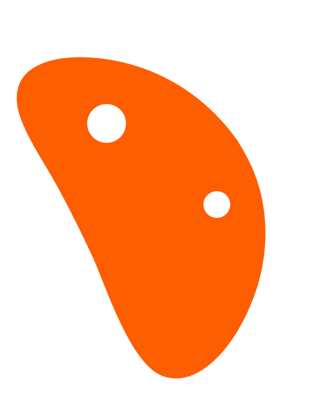
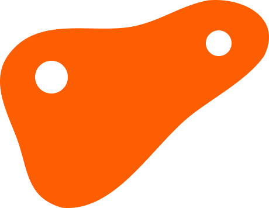
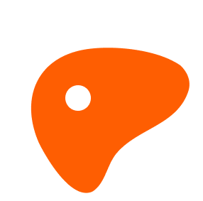